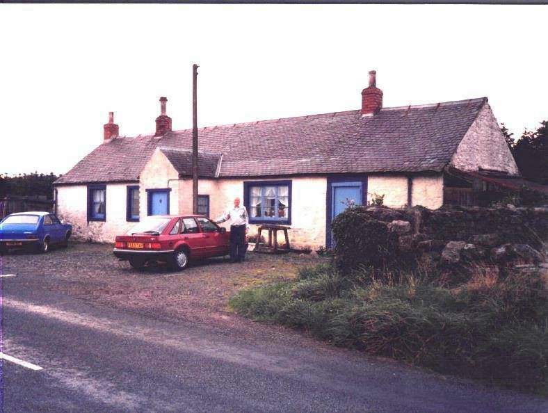
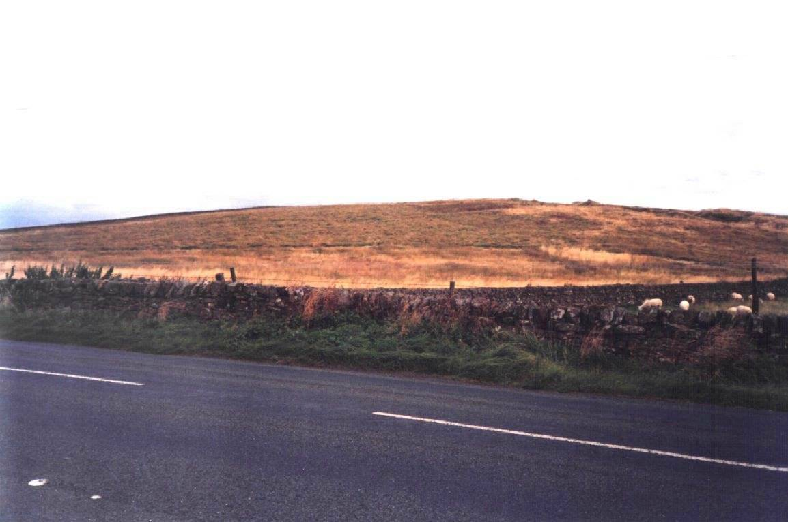
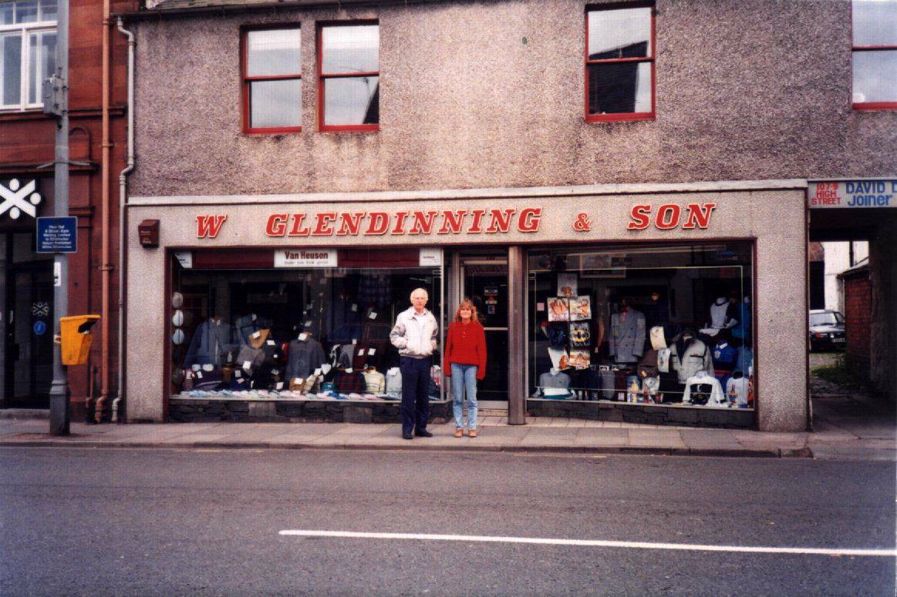

"Plate 14: Dumfrieshire, Scotland" contains three image captions: Callister Hall, "Across from Callister Hall," and "Main Street, Annan." These relate to Don's genealogical research into Scottish ancestral origins, specifically locations in Dumfriesshire where his ancestors may have connections.
Family History & Genealogy
PLATE 14: Dumfrieshire, Scotland

Callister
Hall

Across
from Callister Hall

Main Street, Annan